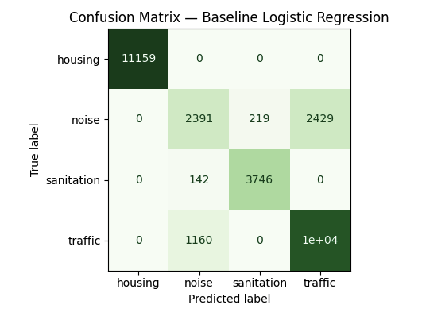

NYC 311 on AWS (Serverless Data Pipeline)
Built a cloud-based workflow to ingest, process, and analyze NYC 311 service-request data using AWS. The project demonstrates an end-to-end pipeline mindset: reproducible infrastructure setup, automated data handling, and clear documentation for how the system works and how to run it.
More details
Problem
Public datasets like NYC 311 are large and continuously updated. The goal was to build a repeatable cloud workflow that can ingest data reliably, support querying/analysis, and be documented well enough that another person can run it without guesswork.
Approach
Implemented a serverless-first pipeline design and documented the full workflow end-to-end (setup, ingestion, processing, and analysis). Focused on clean interfaces between steps, automation where possible, and keeping the repository easy to navigate for reviewers.
Results & Impact
Produced a working cloud workflow that’s easy to demo and extend. The repository is designed to showcase practical cloud data engineering fundamentals (automation, reliability, and clear documentation) in an employer-readable way.